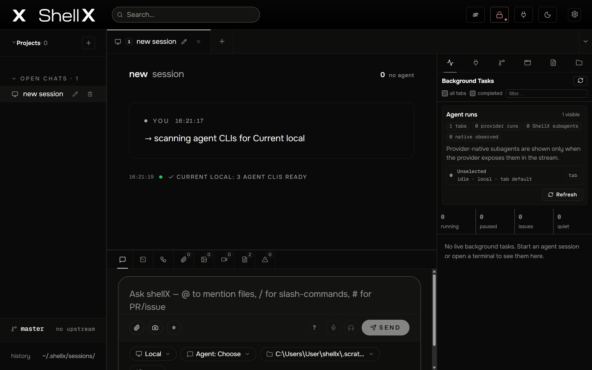

Selected control
Header: Find
Find searches the available conversation corpus and opens the selected chat without changing its project or connection identity.
Boundary
Agent workspace · Browser · Vault
ShellX is a desktop workspace for local and remote coding agents. It keeps conversations, project files, Browser tasks, Vault approvals, previews, Git state, and test evidence visible in one operator-controlled shell.
This manual covers ShellX v0.3.51. Verify the installed version from Settings → About when comparing behavior with these instructions.

interface map
Selected control
Find searches the available conversation corpus and opens the selected chat without changing its project or connection identity.
Boundary
start
shellx.start.install
LinkUse a signed installer for your platform. Settings → About checks the updater feed on Windows, macOS, and Linux AppImage installs; Linux deb and rpm packages update manually.
shellx.start.first_session
LinkChoose a project folder, connection, agent, and permission mode before sending the first prompt.
BoundaryDo not point a Full Auto agent at an entire home directory or an untrusted repository.
shellx.start.health
LinkThe Tools and Environment surfaces distinguish an installed CLI, a connected session, healthy host tooling, and a finished task.
workspace
shellx.workspace.tabs
LinkEach tab owns its connection, working folder, agent session, permission mode, and recent activity.
shellx.workspace.files_git
LinkBrowse project files, preview common formats, inspect diffs, and create local checkpoints without leaving ShellX.
shellx.workspace.assets
LinkPaste, drop, attach, or send files into a session, then review generated images and videos in the Assets board.
connections
shellx.connections.local
LinkLocal sessions run the provider CLI on the same operating system as ShellX and use native paths.
shellx.connections.wsl
LinkWSL sessions use wsl.exe, Linux paths, and the selected distribution's agent installations.
shellx.connections.ssh_posix
LinkUse the direct POSIX runtime for Linux, macOS, or an sshd running inside WSL. ShellX keeps POSIX paths and commands in that remote environment.
shellx.connections.windows_native
LinkShellX can run Windows-installed CLI agents directly through Windows OpenSSH with encoded PowerShell commands, streamed setup input, and Windows paths. WSL is not required.
BoundaryTest Connection verifies the transport; Scan CLIs refreshes the destination binary and version; starting a session verifies provider authentication and the live protocol path. A passing transport check alone does not prove that a provider is installed or signed in.
shellx.connections.windows_openssh
LinkShellX can connect through native Windows OpenSSH and run the tab inside an explicitly selected WSL distro.
BoundaryThis optional runtime executes agents inside WSL. It does not replace the required native-Windows runtime for ordinary Windows PCs without WSL; using a WSL sshd endpoint is also supported.
interface
shellx.interface.header.about
LinkClick the ShellX wordmark to open the canonical About surface with the running version, source link, update status, and diagnostics entry points.
shellx.interface.header.find
LinkFind searches the available conversation corpus and opens the selected chat without changing its project or connection identity.
shellx.interface.header.browser
LinkBrowser opens the separate ShellX Browser workspace; it does not silently create, focus, or navigate an agent task.
shellx.interface.header.requests
LinkThe request badge opens pending Browser, Vault, session, and client approval requests so the operator can inspect and decide each exact operation.
shellx.interface.header.inbox
LinkThe connector inbox appears when configured Telegram or Discord events need attention and opens the recent inbound-event surface.
shellx.interface.header.plugins
LinkPlugins opens the global MCP server and connector catalog. Installation, enablement, required Vault keys, and current session health are separate states.
shellx.interface.header.theme
LinkThe moon or sun control switches between dark and bright ShellX themes and persists the chosen appearance.
shellx.interface.header.settings
LinkSettings opens the tabbed application preferences dialog; changes save automatically and Escape closes it.
shellx.interface.left.projects
LinkProjects groups open and stored chats under operator-named labels. The plus button creates a label; expanding a row reveals its filed chats.
shellx.interface.left.open_chats
LinkOpen chats lists live tabs for quick focus, rename, move, or deletion without confusing a UI project label with a filesystem folder.
shellx.interface.left.past_chats
LinkPast chats lists closed on-disk sessions. Reopening restores conversation history but does not guarantee that the old connection or provider is still available.
shellx.interface.right.tasks
LinkTasks shows running and recent background processes for the active session, including attribution when ShellX can identify the owning tab or agent.
shellx.interface.right.tools
LinkTools reports the selected connection, provider CLI, ShellX host exposure, MCP configuration, environment checks, and capability health.
shellx.interface.right.git
LinkGit shows status, diffs, local checkpoints, branches, and worktrees for the active project-scoped working directory.
shellx.interface.right.preview
LinkPreview starts and inspects supported local web work, including process output, loopback URL, screenshots, and Preview Doctor evidence.
shellx.interface.right.plan
LinkPlan displays the active build or goal scratchboard and routes review actions to the current tab rather than treating a stale plan file as live state.
shellx.interface.right.files
LinkFiles browses the active tab's project tree, opens supported previews, and lets files be attached to the current prompt.
shellx.interface.bottom.chat
LinkChat shows the streamed provider conversation and the composer for the active session tab.
shellx.interface.bottom.terminal
LinkTerminal provides a persistent operator-owned shell for the active session tab. Provider-originated ACP terminal requests stay disabled and cannot attach to this shell.
shellx.interface.bottom.trace
LinkTrace opens the session activity browser for recorded files, tools, commands, searches, and media references.
shellx.interface.trace.files
LinkFiles groups recorded activity into a searchable folder and file tree with read, write, delete, search, command, Git, and media counts.
shellx.interface.trace.graph
LinkGraph visualizes the session, action kinds, folders, and files as a movable evidence graph with weighted links and a selected-node detail panel.
shellx.interface.trace.evidence
LinkEvidence separates changes, reads and searches, commands, and Git activity into resizable panes while preserving verified, observed, and inferred confidence.
shellx.interface.trace.timeline
LinkTimeline orders the recorded session activity by time so file, command, search, Git, and media events can be correlated without implying missing telemetry never occurred.
shellx.interface.trace.summary
LinkSummary condenses source status, action totals, current build state, and recent build receipts for handoff or review.
shellx.interface.bottom.assets
LinkAssets opens the full attachment and generated-media board for the active session rather than switching to one media-type tab.
shellx.interface.bottom.images
LinkImages opens the active session's image gallery even when it is empty, then collects generated or detected image artifacts for preview as they arrive.
shellx.interface.bottom.videos
LinkVideos opens the active session's video gallery even when it is empty, then collects generated or detected video artifacts for preview as they arrive.
shellx.interface.bottom.logs
LinkLogs shows the recent structured ACP and ShellX event stream for diagnosis; it is evidence, not a replacement for final output or Git state.
shellx.interface.bottom.stderr
LinkStderr isolates recent provider and process error output so failures are not hidden inside normal chat rendering.
shellx.interface.composer.connection
LinkThe connection pill selects Local, WSL, or a saved SSH environment for this tab and exposes connection testing and CLI scanning.
shellx.interface.composer.agent
LinkThe agent picker selects the provider runtime installed in the tab's chosen environment; changing it does not migrate an existing provider process.
shellx.interface.composer.folder
LinkThe folder pill selects the tab's working directory. Confirm it before granting write authority or sending a destructive request.
shellx.interface.composer.branch
LinkThe branch picker shows and changes Git branches for the active working directory while preserving the tab's connection frame.
shellx.interface.command.connect
LinkConnect starts the selected agent in this tab's current connection, working folder, and autonomy frame; confirm all three before running it.
shellx.interface.command.abort
LinkAbort requests cancellation of the active provider startup or turn in this tab; startup cleanup may finish asynchronously, and it does not silently terminate unrelated tabs or background agents.
shellx.interface.command.new_session
LinkNew session tab creates another ShellX tab while preserving existing sessions, so connection and provider choices remain independently reviewable.
shellx.interface.command.close_tab
LinkClose current tab removes only the selected ShellX tab after the normal session-close path; it does not close the whole application.
shellx.interface.command.settings
LinkOpen settings displays the complete tabbed Settings dialog, beginning on its current or General tab, without changing provider state by itself.
shellx.interface.command.desktop
LinkDesktop integrations opens Settings directly on the Desktop tab, where file-send and operating-system integration status can be reviewed.
shellx.interface.command.attach
LinkAttach file opens the platform picker and adds the selected path as a visible composer chip; the file is not sent until the prompt is submitted.
shellx.interface.command.screenshot
LinkAttach app screenshot captures the current ShellX window into an owned image file and adds that exact image as a removable composer attachment.
shellx.interface.command.media_board
LinkAttachment and media board opens the session's full attachment, image, and video workspace so generated and pending media can be inspected together.
shellx.interface.command.work_preview
LinkOpen Work Preview selects the Preview right rail and opens the Preview Center in work mode for the active tab's current preview state.
shellx.interface.command.preview_doctor
LinkAsk active agent to fix current preview appears only after a preview URL exists or preview startup fails; it collects bounded diagnostics and sends the repair request to the active agent.
BoundaryThis conditional action appears between Open Work Preview and Toggle Chat / Terminal. The highlighted image shows its Preview destination because the idle palette capture correctly omits unavailable actions.
shellx.interface.command.toggle_terminal
LinkToggle Chat / Terminal switches the active bottom panel between the conversation and terminal views without changing any other session tab.
shellx.interface.command.pull_request
LinkCreate pull request opens the local review dialog for the active repository; opening the dialog does not publish or mutate a remote repository.
shellx.interface.command.vault
LinkOpen Vault displays the Vault workspace at its overview without reading or revealing secret values merely because the panel was opened.
shellx.interface.command.help
LinkShow keyboard shortcuts opens the full shortcut dialog, which is separate from the smaller composer help popover beside the prompt.
shellx.interface.command.autonomy_auto
LinkAutonomy Auto selects bypassPermissions for the active tab; use it only when the requested work and environment justify unattended actions.
shellx.interface.command.slash_commands
LinkThe Slash rows list commands actually advertised for the active agent and environment; choosing one inserts it into the composer rather than executing it immediately.
shellx.interface.composer.attach
LinkAttach or drag files into the prompt as visible chips; inspect the paths and remove unintended files before sending.
shellx.interface.composer.screenshot
LinkCaptures the current ShellX window and adds it as a visible prompt attachment; it does not capture another desktop window.
shellx.interface.composer.voice
LinkVoice records speech for the active tab only, shows unavailable or credential states, and prevents a stale voice owner from leaking across tabs.
shellx.interface.composer.help
LinkThe inline help popover lists composer shortcuts and interaction hints without taking permanent space from the chat.
shellx.interface.composer.send
LinkSend submits the visible prompt and attachments to the active tab. While work is running, the same action surface exposes the applicable stop behavior.
shellx.interface.settings.general
LinkGeneral controls model defaults, reasoning effort, typography, density, appearance, and other workspace-wide preferences.
shellx.interface.settings.vault
LinkVault manages passwords and keys, typed resources, active grants, and profile setup through the current shared Vault backend.
shellx.interface.vault.workspace.passwords
LinkPasswords & keys opens the stored-resource list and editor area while keeping secret values hidden unless the operator explicitly reveals or copies one.
shellx.interface.vault.workspace.grants
LinkActive grants lists current mediated permissions and lets the operator inspect or revoke access without exposing the underlying secret value.
shellx.interface.vault.workspace.setup
LinkSetup configures the shared Vault backend, unlock and recovery state, remembered-device behavior, and standalone Vault connection details.
shellx.interface.vault.resource.password_key
LinkThe Password/key editor stores a named secret with optional safe metadata, user-only visibility, and an integrated strong-password generator.
shellx.interface.vault.resource.profile
LinkThe Profile editor groups contact and identity fields into a reusable profile card for approved, mediated form-filling workflows.
shellx.interface.vault.resource.agent_wallet
LinkThe Agent wallet editor stores reference-only Stripe configuration, budget constraints, allowed origins and categories, and an explicit operating status.
shellx.interface.settings.connections
LinkConnections reviews saved Local, WSL, and SSH presets; editing and environment-specific CLI scans remain available from the connection picker.
shellx.interface.settings.connectors
LinkConnectors configures supported outside messaging surfaces and shows their availability and setup state.
shellx.interface.settings.desktop
LinkDesktop controls host operating-system integrations and handoff behavior that do not belong to an individual agent tab.
shellx.interface.settings.shellxagent
LinkshellXagent configures the authenticated local API and agent-facing ShellX integration status; it does not globally enable the ShellX host skill.
shellx.interface.settings.data
LinkData shows storage and retention controls for local ShellX state and provides explicit maintenance actions.
shellx.interface.settings.about
LinkAbout shows the running version, source and issue links, update diagnostics, and release-readiness information.
browser-interface
shellx.browser.ui.new_tab
LinkCreates a normal tab in the currently selected Browser profile. The visible profile marker and ownership banner identify its authority.
shellx.browser.ui.disposable_tab
LinkCreates a task-disposable tab intended for bounded agent work and separate cleanup from personal browsing.
shellx.browser.ui.agent_lock
LinkLocks or unlocks the active tab for the current agent lease so another actor cannot silently take control.
shellx.browser.ui.personal_lock
LinkLocks personal Browser content immediately or opens lock setup when no personal lock has been configured.
shellx.browser.ui.handoff
LinkHands the exact active tab to the active agent task while ownership remains visible in the banner.
shellx.browser.ui.take_back
LinkReturns a delegated tab to the operator without changing its URL, profile, or task history.
shellx.browser.ui.right_panel_toggle
LinkShows or hides the agent cowork panel without changing the Browser task, tab owner, or page.
shellx.browser.ui.back
LinkMoves the active tab backward in its navigation history when a Browser tab is available.
shellx.browser.ui.forward
LinkMoves the active tab forward in its navigation history after a backward navigation.
shellx.browser.ui.reload
LinkReloads the active page without changing the selected tab, profile, or ownership.
shellx.browser.ui.home
LinkNavigates the active tab to the configured Browser homepage.
shellx.browser.ui.trust
LinkOpens the current page security and shields summary so transport trust, filtering, and compatibility state are visible.
shellx.browser.ui.address
LinkThe address field navigates to a URL or search target in the active Browser tab.
shellx.browser.ui.copy_address
LinkCopies the current page URL without copying page content or changing Browser state.
shellx.browser.ui.bookmark_current
LinkAdds the active page to Browser bookmarks using the current title and URL.
shellx.browser.ui.vault_fill
LinkOpens matching Vault fill candidates for the visible page; it stays disabled when no approved or eligible match exists.
shellx.browser.ui.downloads
LinkOpens current and recorded transfer intents, completion state, final paths, and the default download folder control.
shellx.browser.ui.bookmarks
LinkOpens the bookmark list or manager for navigation, folders, pinning, rename, URL editing, sorting, and deletion.
shellx.browser.ui.history
LinkOpens Browser history with separate User and Agent scopes, search, date filtering, and an explicit clear action.
shellx.browser.ui.save
LinkOpens local artifact and queued copy choices; each Save page item below is documented separately.
shellx.browser.ui.ads
LinkOpens the three visible ad-filter policies—Balanced, Strict, and Off—without exposing the legacy internal compatibility value.
shellx.browser.ui.options
LinkOpens Browser-specific appearance, homepage, profile, sidebar, personal-lock, and agent-engine preferences.
shellx.browser.save.full_page
LinkWrites a PNG of the complete scrolling page to ShellX-owned Browser artifacts.
shellx.browser.save.window
LinkWrites a PNG of the currently visible Browser window.
shellx.browser.save.markdown
LinkWrites readable extracted page text as a local Markdown artifact.
shellx.browser.save.links
LinkWrites the visible rendered-page links as structured JSON.
shellx.browser.save.snapshot
LinkWrites a bounded bundle of Markdown, links, and screenshot metadata for review.
shellx.browser.save.media
LinkQueues a copy job for eligible images, video, and audio instead of pretending the material is already saved.
shellx.browser.save.code
LinkQueues a copy job for eligible HTML, CSS, and script resources.
shellx.browser.save.site
LinkQueues an offline-site copy job whose progress and final result must be reviewed.
shellx.browser.ads.balanced
LinkBlocks common advertising noise while prioritizing site compatibility.
shellx.browser.ads.strict
LinkBlocks matching advertising and tracker requests before load, with a greater chance of site breakage.
shellx.browser.ads.off
LinkLoads the page without ShellX ad filtering; normal Browser and network security boundaries still apply.
shellx.browser.options.color
LinkChooses System, Light, or Dark appearance for the Browser workspace.
shellx.browser.options.homepage
LinkSets the URL used by the Browser Home button for the active Browser profile.
shellx.browser.options.profile
LinkChooses the default Browser profile for new normal tabs; the visible profile marker confirms the active choice.
shellx.browser.options.sidebar
LinkControls whether the agent cowork sidebar is shown by default.
shellx.browser.options.personal_lock_enable
LinkEnables or disables the personal-tab lock and exposes the immediate Lock or Unlock action.
shellx.browser.options.personal_lock_timeout
LinkChooses the inactivity period before personal Browser tabs lock.
shellx.browser.options.personal_lock_auth
LinkChooses device authentication when available or a ShellX session PIN.
shellx.browser.options.personal_lock_pin
LinkSets or updates the session PIN used when PIN unlock is selected or device authentication is unavailable.
shellx.browser.options.personal_lock_cover
LinkCovers locked personal-tab content so it is not left readable in the Browser workspace.
shellx.browser.options.personal_lock_pause
LinkPauses delegated Browser tabs when Personal Browser Lock engages.
shellx.browser.options.personal_lock_sleep
LinkLocks personal Browser tabs when the operating system resumes from sleep.
shellx.browser.options.personal_lock_minimize
LinkOptionally locks personal Browser tabs whenever the Browser window is minimized.
shellx.browser.options.parallel_agents
LinkChooses automatic or explicit Browser agent concurrency limits without granting additional tab ownership.
shellx.browser.panel.chat
LinkShows the human-agent Browser cowork conversation, task goal, and page-explanation prompt for the active task.
shellx.browser.panel.requests
LinkShows pending Vault and sensitive Browser prompts that require a direct operator decision.
shellx.browser.panel.actions
LinkShows current task controls, recent Browser actions, console information, and receipts in collapsible sections.
shellx.browser.panel.actions_tasks
LinkTasks expands or collapses the current Browser task controls and recent task state without changing task ownership or lifecycle by itself.
shellx.browser.panel.actions_receipts
LinkReceipts expands or collapses the recent bounded Browser action receipts used to review what the active task actually attempted.
shellx.browser.panel.evidence
LinkRecords a bounded, redacted attempt for the current Browser task and reviews Flight Recorder attempt and evaluation identities, exact hashes, completeness, and comparison counts without exposing private artifact paths or page content. Record attempt is disabled until a current task exists; Refresh reloads the bounded receipt list.
shellx.browser.panel.errors
LinkShows current Browser/runtime errors separately from normal action and chat history.
shellx.browser.panel.errors_console
LinkPage errors expands or collapses the bounded page-console records, including level, message, time, and source location when available.
shellx.browser.sidecar.history_scopes
LinkSwitches between personal browsing history and agent/task history so the two are not silently blended.
shellx.browser.sidecar.history_filters
LinkFilters the selected history scope by text and date without deleting stored entries.
shellx.browser.sidecar.clear_history
LinkExplicitly clears Browser history after an operator action; filtering alone never deletes it.
shellx.browser.sidecar.bookmark_list
LinkBrowses bookmarks and folders and opens the chosen saved URL.
shellx.browser.sidecar.bookmark_manager
LinkCreates links and folders, renames labels, edits URLs, pins toolbar items, sorts by drag, and confirms deletion.
shellx.browser.sidecar.download_folder
LinkShows and changes the default download folder before future transfers are accepted.
shellx.browser.sidecar.download_list
LinkShows pending, completed, and failed Browser transfers with truthful destination and status information.
agents
shellx.agents.providers
LinkShellX can host Grok over ACP and run supported provider CLIs with streamed output and per-tab continuity.
shellx.agents.cli_status
LinkThe right-rail Agent CLIs card scans the active local, WSL, or SSH target when the tab opens instead of trusting only the version saved by an older connection scan.
shellx.agents.session_capabilities
LinkSession Tools derives readiness from the current agent's advertised catalog instead of assuming every provider has the same native features.
shellx.agents.grok
LinkGrok uses a persistent ACP session with native approvals, tools, images, MCP servers, and provider-native continuation where the installed CLI advertises them.
shellx.agents.codex
LinkThe Codex CLI uses structured JSON output with provider-native continuation, approvals, tools, and a per-process ShellX instruction/MCP override.
shellx.agents.claude
LinkClaude Code uses bidirectional stream-json with native tool events, continuation, permission modes, and a private ShellX MCP config for the selected tab.
shellx.agents.antigravity
LinkAntigravity 1.1.8+ streams typed text, tool, subagent, conversation, and usage events while retaining its native Browser, web search, image generation, and coding tools.
BoundaryThe 1.1.11 CLI discovered the exact canary schema, but its execution backend rejected four attempted invocation spellings as unknown tools; the MCP server received no tools/call. The tiny failed probe consumed about 71k tokens, so ShellX does not advertise this as working functionality.
shellx.agents.host_skill
LinkShellX host guidance and tools are injected only into agents launched by ShellX; direct CLI sessions do not inherit a global skill, MCP server, or instruction block.
shellx.agents.permissions
LinkShellX coding-agent sessions run in provider-native Full Auto.
shellx.agents.mcp
LinkConfirmed ShellX sessions can receive tab-bound host tools for status, Browser, Vault, previews, processes, media, and provider handoffs.
browser
shellx.browser.open
LinkUse the Browser header entry for human browsing or let a confirmed ShellX-hosted agent start a disposable task.
shellx.browser.cowork
LinkA human can delegate an exact tab/task while ShellX keeps ownership, locks, prompts, and receipts visible.
shellx.browser.observe_act
LinkAgents observe bounded DOM/accessibility state, then act on stable references with stale-target and motion checks.
shellx.browser.sensitive
LinkSign-ins, purchases, uploads, downloads, account changes, secret use, and other consequential actions remain explicit and reviewable.
shellx.browser.vault
LinkBrowser fills use an approved Vault grant so durable secret values stay out of the agent transcript.
shellx.browser.workflows
LinkDownloads expose final paths, reusable workflows keep scope metadata, and failed actions retain truthful step results.
vault
shellx.vault.create_connect
LinkShellX resolves the canonical Vault profile, migrates legacy profile locations, and can connect to an existing standalone Vault profile.
shellx.vault.lock_recovery
LinkVault data is encrypted at rest; remembered-device unlock and recovery behavior belong to the Vault profile, not an agent session.
shellx.vault.resources
LinkStore API keys, logins, identities, cards, wallets, and other typed resources with descriptions and visibility policy.
shellx.vault.single_backend
LinkShellX sessions, SSH keys, subagents, marketplace connectors, diagnostics, and host tools resolve the same current Vault profile.
shellx.vault.grants
LinkAn agent can request one mediated operation, but cannot approve its own grant or raw-reveal a Vault value.
shellx.vault.executable_requests
LinkAn agent can queue one exact absolute executable with selected Vault resources injected as child-process environment variables, but only a trusted ShellX operator can run it.
BoundaryThe command runs on the machine hosting the ShellX desktop app, not automatically inside the active WSL or SSH destination. Inline shell/interpreter evaluation, user-only resources, legacy pass-store refs, and loader-altering environment variables are refused. Review the complete request in ShellX, and verify redacted output and cleanup before treating the operation as complete.
shellx.vault.standalone
LinkThe integrated client shares the current broker profile rules and compatibility resource schema with standalone ShellX Vault.
BoundaryBroker/profile parity includes the owner-approved executable-request flow. Compatibility does not make concurrent profile migration safe; use one current client as the migration owner and retain recovery material until the result is verified.
build
shellx.build.mode
LinkThe /build command runs a long-horizon Grok workflow with an approved scratchboard, checkpoints, review, and completion gates.
shellx.build.preview
LinkRun static sites and supported web apps on loopback, inspect logs and screenshots, and send failures back to the active agent.
shellx.build.trace
LinkCurrent Trace surfaces session file/search/write/delete activity, tools, commands, and generated-media references when providers expose them.
shellx.build.flight_recorder
LinkBounded Flight Recorder export and evaluation route through the Browser Evidence panel, compact Browser gateway, and CLI. Attempts retain monotonic source sequence, explicit sanitizer/selection truncation and task-owned retention gaps, completeness, first-evidence/action/network timing, operation coverage, and task-local handoff lineage; HTTP path/query/fragment values are removed, while unknown duration and parent/child lineage stay visibly partial. The Evidence panel can record the current task directly and marks gapped attempts instead of presenting every export as complete.
api-security
shellx.api.debug
LinkThe installed app exposes authenticated loopback-only endpoints for sessions, prompts, screenshots, diagnostics, Browser, Vault, previews, and settings.
shellx.security.data
LinkShellX stores sessions and configuration under the active profile, binds services to loopback, and keeps Vault values encrypted and operator mediated.
shellx.troubleshooting.connections
LinkSeparate network reachability, SSH shell compatibility, CLI installation, authentication, cwd, and host-tool health.
shellx.troubleshooting.browser_vault
LinkCheck task ownership, tab/profile identity, locks, pending dialogs, grant state, Vault lock state, and final receipts in that order.
shellx.troubleshooting.release
LinkA release candidate needs source gates, exact artifact identity, a disposable installed profile, cross-host behavior, and fresh receipts.
No manual features match this search.